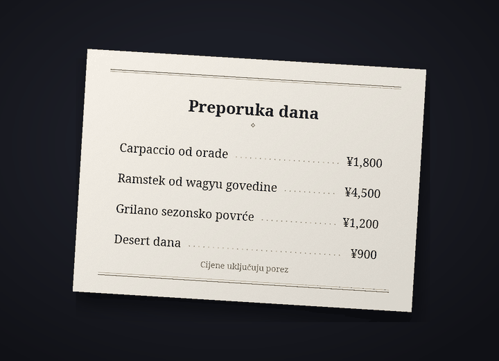

Bot za prevođenje razgovora na Discordu
Razgovarajte na Discordu, svatko na svojem jeziku
Cozirom je bot za Discord koji prevodi razgovore na jezik sugovornika. Kad ga uključite, vaše se poruke objavljuju prevedene pod vašim imenom i profilnom slikom, a prevodi se i tekst na slikama.
Prijevode radi AI (Claude tvrtke Anthropic). Može pogriješiti, pa za važne stvari provjerite i izvornik.
Što bot može
Jedan bot prevodi tekst, slike i glas
Limiti planova broje se u prijevodima. Jedna poruka prevedena na jedan jezik je 1 prijevod.
6 funkcija
Broj prijevoda
Automatsko prevođenje
Dovoljno je jednom upisati
/prijevod uključii vaše će se poruke na tom poslužitelju objavljivati na jeziku sugovornika, pod vašim imenom i profilnom slikom. Izvornik ostaje ispod prijevoda sitnim slovima, a gumb prikazuje cijeli izvornik.
prikazuje cijeli izvornik.Prijevodi1 po poruci
Tekst na slikama
Jelovnici, zasloni igara, memeovi: ako na slici ima teksta, pročitat će se i prevesti. Prijevod otvarate ikonom
 ispod slika ljudi koji su uključili prevođenje ili prevođenjem desnim klikom. Rezultat vidi samo onaj tko ga je zatražio, a slike bez teksta se ne broje.
ispod slika ljudi koji su uključili prevođenje ili prevođenjem desnim klikom. Rezultat vidi samo onaj tko ga je zatražio, a slike bez teksta se ne broje.PrijevodiObično oko 9 po slici
Prijevod na slici
Ikonom
 dobivate kopiju slike s izbrisanim izvornim tekstom i prijevodom iscrtanim na njegovu mjestu. Font je na početku „Kao izvornik“, blizak izvornim slovima, a možete birati i između najviše 10 skupova fontova, poput „Serifni“, „Rukopis“ i „Strip“, bez trošenja prijevoda. Najbolje radi na vodoravnom tekstu, poput snimki zaslona, memeova, zaslona igara i jelovnika, a rezultat vidi samo onaj tko je pritisnuo.
dobivate kopiju slike s izbrisanim izvornim tekstom i prijevodom iscrtanim na njegovu mjestu. Font je na početku „Kao izvornik“, blizak izvornim slovima, a možete birati i između najviše 10 skupova fontova, poput „Serifni“, „Rukopis“ i „Strip“, bez trošenja prijevoda. Najbolje radi na vodoravnom tekstu, poput snimki zaslona, memeova, zaslona igara i jelovnika, a rezultat vidi samo onaj tko je pritisnuo.PrijevodiObično oko 19 po slici


Primjer: izvorna fotografija (jelovnik na japanskom) i ista fotografija na kojoj je tekst izbrisan, a na njegovu mjestu fontom „Serifni“ iscrtan prijevod na hrvatski. Glasovne poruke
Kliknite desnom tipkom na glasovnu poruku poslanu iz mobilne aplikacije i dobit ćete zapis izgovorenog i njegov prijevod. Transkribiraju se poruke do 3 min, a poruke bez govora ne broje se.
Prijevodi1 po sekundi plus prijevod10-sekundna poruka obično je 11
Četiri tona
Sleng, ležeran, prijateljski ili službeni: ton birate za svaki poslužitelj. S prijateljima na ti, na novom mjestu na Vi. U planu Guest (besplatan) sva četiri tona imate prvih 14 dana, a zatim prijateljski.
PrijevodiPlaćeni: sva četiri. Free: prvih 14 dana
31 jezik
Prevodi se 31 jezik. Zasloni bota i nazivi naredbi prikazuju se na 30 jezika Discorda, pa sugovornik sve postavlja na svojem jeziku.
Prijevodi31 za prijevod, 30 za sučelje

Kako početi
Tri koraka i prijevod se pojavljuje pod vašim imenom
Dodajte bota na poslužitelj
Administrator poslužitelja dodaje bota na poslužitelj. Poveznicu za pozivnicu zatražite putem poslužitelja za podršku.
Uključite prijevod
Svatko tko želi da mu se poruke prevode upisuje
/prijevod uključina tom poslužitelju. Bot pogađa vaš jezik i jezik sugovornika te otvara ploču s postavkama. Ako je nešto krivo pogodio, promijenite to u padajućim izbornicima.Pišite kao i obično
Pišite kao i obično, a prijevod će se pojaviti pod vašim imenom. Počnite s planom Guest (besplatan), a kad vam zatreba više, promijenite plan na stranici s planovima.
Privatnost
Poruke za prijevod i slike šalju se samo tvrtki Anthropic (SAD), a zvuk glasovnih poruka samo tvrtki Google (SAD). Bot čuva izvornik objavljenog prijevoda 14 dana, a predmemoriju prijevoda 30 dana, i ne sprema slike, zvuk ni tekst dobiven iz njih. Sadržaj razgovora nikad ne ulazi u zapisnike, a naredbom /prijevod izbriši-podatke u bilo kojem trenutku brišete svoje podatke.